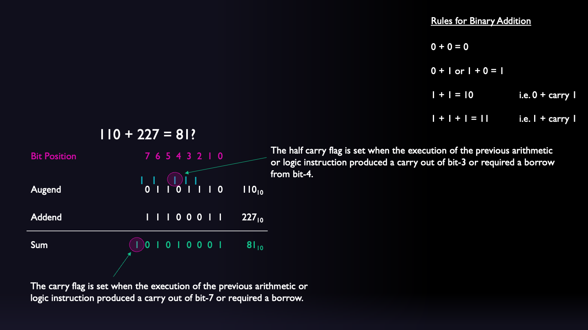
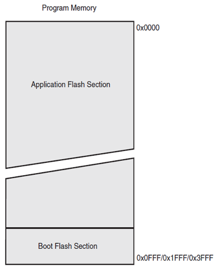
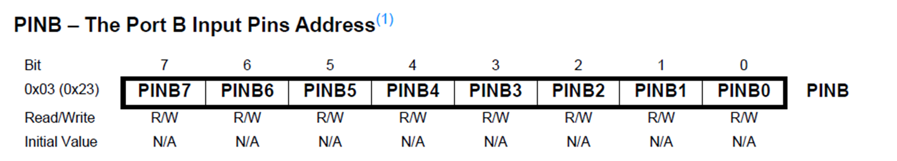

This is an 8-bit CMOS microcontroller based on the AVR enhanced RISC architecture with 131 instructions
It has 2KB of Internal SRAM, 32 KB of Flash Memory and 1 KB of EEPROM
It has 32 General Purpose Registers
It can achieve up to 20 MIPS at 20 MHz (maximum clock frequency)
There are 8 Analog I/O Pins connected to 10-bit ADC
There are 22 Digital I/O Pins (6 capable of PWM)
The AVR core uses a Harvard memory architecture – with separate memories and buses for program and data.
The Status Register
What is the status register?
Figure 2: SREG - The AVR Status Register
An 8-bit register containing flags that contain information about the result of the most recently executed instruction and the current state of the processor (Figure 2).
The status register is updated after all ALU instructions as specified by the instruction set reference.
Example - Effect on SREG of ADC instruction
Figure 3: Example instruction showing how the status register is affected by the ADC (add with carry) instruction (Atmel 2020, 24)
Status Register Flags
Status Register Flags
Bit
Flag
Meaning
Bit 0
Carry Flag (C)
The carry flag is set when the execution of the previous arithmetic or logic instruction produced a carry out of bit-7 or required a borrow.
Bit 1
Zero Flag (Z)
The zero flag is set when the result of the previous arithmetic or logic instruction resulted in a zero
Bit 2
Negative Flag (N)
The negative flag is set when the result of the previous arithmetic or logic instruction is negative
Bit 3
Two’s Complement Overflow Flag (V)
The Two’s Complement Overflow Flag V supports two’s complement arithmetic. +ve + +ve = -ve or -ve + -ve = +ve
Bit 4
Sign Bit (S)
The S-bit is always an exclusive or between the Negative Flag and the Two’s Complement Overflow Flag.
Bit 5
Half Carry Flag (H)
The half carry flag is set when the execution of the previous arithmetic or logic instruction produced a carry out of bit-3 or required a borrow from bit-4.
Bit 6
Bit Copy Storage (T)
A bit from a register in the Register File can be copied into T by the BST instruction, and a bit in T can be copied into a bit in a register in the Register File by the BLD instruction.
Bit 7
Global Interrupt Enable (I)
The Global Interrupt Enable bit is set to enable interrupts. The individual interrupt enable control is then performed in separate control registers.
Status Register Example

Figure 4: An example of how the status register works
A program is a sequence of instructions written in a particular order to perform a specific task
The instructions of the program are stored sequentially in non-volatile memory.
The program counter is a register which holds the address of the next instruction to be executed
Example of a program
Figure 5 illustrates a simple program to add two numbers.
Figure 5: An example program showing three instructions located at memory locations 0 through 2.
Organisation of program memory
The ATmega328 microcontroller has a 32 Kbyte flash memory which is organised into 256 pages each containing 64 Words of program.
The program counter is 14-bits and can access each of these memory locations 0x0000 – 0x3FFE
The remaining addresses 0x3FFF – 0x7FA5 (the boot flash section) are reserved for the bootloader
Figure 6 illustrates the organisation of the program memory for the ATmega328.

Figure 6: The program memory of the ATmega328 microcontroller
Figure 7 shows how the program counter is used to access the next instruction.
Figure 7: How the program counter is used to access instructions within the available pages of program memory
Program Counter Demonstration
Table 1: A selection of instructions and the number of 16-bit words they need for storage.
Instruction
Number of words
ADD
1
LDI
1
LDS
2
STS
2
When executing these instructions, the program counter advances by the number of words in each instruction. We will demonstrate this later.
LDI instruction
Figure 8: The LDI instruction: takes a four bit opcode, a 4-bit register number (0-31) and an 8-bit value. The program counter is incremented by one when this instruction is executed. (Atmel 2020, 92).
LDS instruction
Figure 9: The LDS instruction: takes an bit opcode, an 12-bit opcode, a 4-bit register number (0-31) and an 16-bit value which represents a data location on memory (0-65535). The program counter is incremented by two when this instruction is executed. (Atmel 2020, 93).
Example program
Listing 1: Assembly program illustrating the use of registers, the ADC function and the status register
;; Assembly - simple addition.asm;; Created: 11/10/2022 14:14:16; Author : Ben Clifford; .device ATmega32 .equ VARIABLES =0x0100;Start address in internal RAM for variables (default) .equ PROGRAMME =0x0000;Start address in Flash for programme (default) .equ STACK =0x08FF;Last address in RAM to be used for the Stack (default) .equ num1 =110 .equ num2 =227 .DSEG .org VARIABLES .CSEG .org PROGRAMME MAIN: LDI R16, num1 STS 0x0100, R16; LDI R16, num2 STS 0x0101, R16;LDS R16,0x0100;LDS R17,0x0101;ADC R16, R17 STS 0x0100, R16;
The Stack Pointer
The Stack
In a microcontroller, the ‘stack’ is a space in memory with a fixed origin and a variable size that can be used for temporary storage purposes, such as storing local variables and saving return address for subroutine calls and interrupts.
The stack supports two types of operations:
Push – a data item is placed at the location pointed to by the stack pointer
Pop or Pull – a data item at the current location pointed to by the stack pointer is removed.
The stack typically operates as a “Last In First Out” (LIFO) buffer
What is the stack pointer?
The stack pointer register keeps track of the top of the stack.
A stack PUSH command will decrement the stack pointer.
A stack POP command will increment the stack pointer.
The AVR stack pointer is implemented as two 8-bit registers in the I/O space.
The are called SPH (stack pointer high byte) and SPL (stack pointer low byte) as illustrated in Figure 10.
Figure 10: The AVR stack pointer implemented as two bytes SPH and SPL
Figure 11 illustrates the operation of the stack pointer as it appears to the user of the stack.
Figure 11: Illustration of the operation of a stack.
Stack Pointer Demonstration
Listing 2: Example of the use of the stack
;; Assembly - Stack pointer example.asm;; Created: 11/10/2022 14:14:16; Author : Ben Clifford; .device ATmega32 .equ VARIABLES =0x0100;Start address in internal RAM for variables (default) .equ PROGRAMME =0x0000;Start address in Flash for programme (default) .equ STACK =0x08FF;Last address in RAM to be used for the Stack (default) .DSEG .org VARIABLES .CSEG .org PROGRAMME MAIN: LDI R16,1; LDI R17,2; LDI R18,3PUSH R16PUSH R17PUSH R18POP R16POP R17POP R18
Introduction to Microcontroller I/O
I/O on the ATmega328
Figure 12: Input/output pins for the Arduino nano
Figure 13: Schematic diagram showing the I/O provided by the Atmel ATmega328 microcontroller (Atmel 2015, 6)
MCU Inputs
Consider a switch which on one side is connected to a 5V power source and on the other side to a microntroller input.
What voltage is read at the I/O port when the switch is closed and when it is open?
Pull Ups
To get around this issue, microcontrollers use pull-up (or pull-down) circuitry to hold the port high (or low) (see Figure 14).
Figure 14: Schematic of the pullup circuitry for the ATmega328 (from the manual (Atmel 2015, 58)
What voltage is read at the I/O port when the switch ‘S1’ is closed and when it is open now?
Figure 15: Port with pull-up enabled
Ports as General Digital I/O
Figure 16: The PORTC register
Configuring a pin
Figure 17: A portion of the memory map of the Atmel ATmega328 showing the location of the I/O registers
Configuring a Pin - Data Direction
The DDxn bit in the DDRx Register (illustrated for DDRB in Figure 18) selects the data direction (input or output) of this pin.
Figure 18: DDRB - The port B data direction register.
Writing to a Pin - Output
The Pxn bit in the PORTx Register (illustrated for PORTC in Figure 19) has two purposes dependent on the condition of the corresponding bit in the DDRx register.
Figure 19: PORTC - the port C data register
Reading from a Pin - Input
The port pin can be read through the PINxn Register bit (illustrated for PINB in Figure 20.

Figure 20: PINB - the port B input pins address
Configuring a Pin - Pull Up Enable
Providing a port is configured as an input.
If PORTxn is written logic one when the pin is configured as an input pin, the pull-up resistor is activated.
To switch the pull-up resistor off, PORTxn has to be written logic zero or the pin has to be configured as an output pin.
Basic I/O Demonstration
Listing 3: Demonstration of simple I/O
;.EQU DDRB = 0x04;.EQU PORTB = 0x05;.EQU PIND = 0x09;.EQU DDRD = 0x0A;.EQU PORTD = 0x0B.CSEG.ORG0x0200;setup bits 2 and 3 of port D as inputsIN R16, DDRD ANDI R16,0b11110011OUT DDRD, R16;setup bits 0 and 1 of port B as outputsIN R16, DDRB ORI R16,0b00000011OUT DDRB, R16;both pins B0 (D8) and B1 (D9) start lowIN R16, PORTB ANDI R16,0b11111100OUT PORTB, R16;Enable the pull up resistor for bits 2 and 3 of port DIN R16, PORTD ORI R16,0b00001100OUT PORTD, R16LOOP: SBIC PIND,2; skip RJMP if bit 2 is set (button pressed) RJMP LED1 SBIC PIND,3; skip RJMP if bit 3 is set (button pressed) RJMP LED2IN R16, PORTB ANDI R16,0b11111100OUT PORTB, R16 RJMP LOOPLED1: SBI PORTB,0 RJMP LOOPLED2: SBI PORTB,1 RJMP LOOP.EXIT
Summary
In this chapter we have:
Introduced a few more parts of the AVR core, namely, the status register, program counter and stack pointer and how these are used under normal operation
Started to look at I/O on a microcontroller including the concept of pull up resistors as well as some of the specific registers used in the AVR core to enable the use of both input and output device